PATITAS FELICES EN ACCIÓN
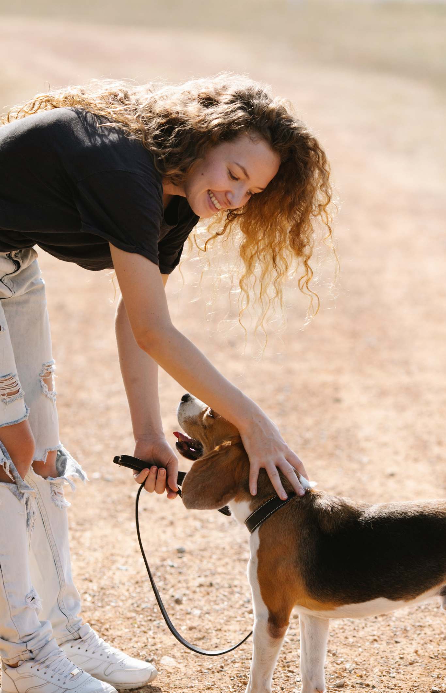
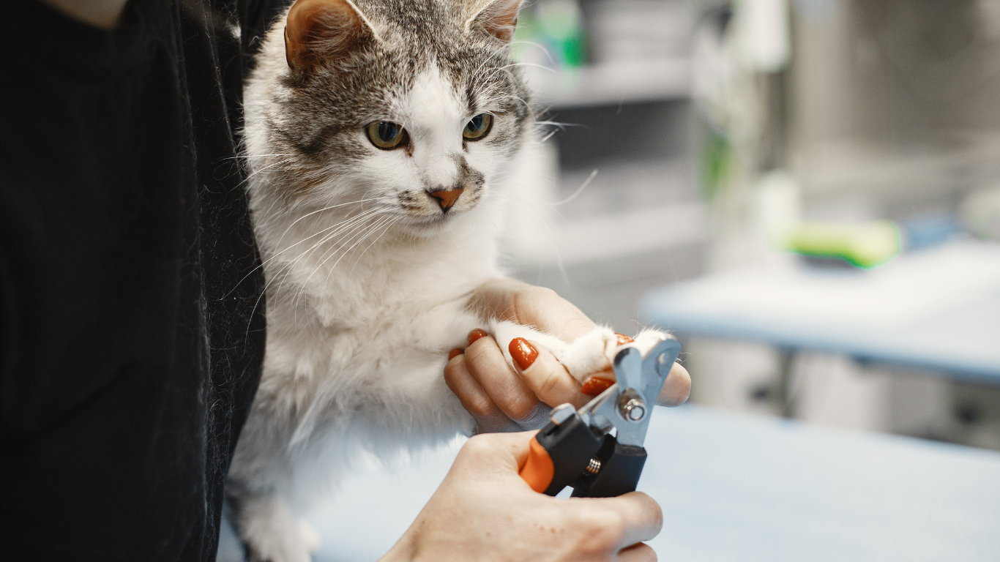
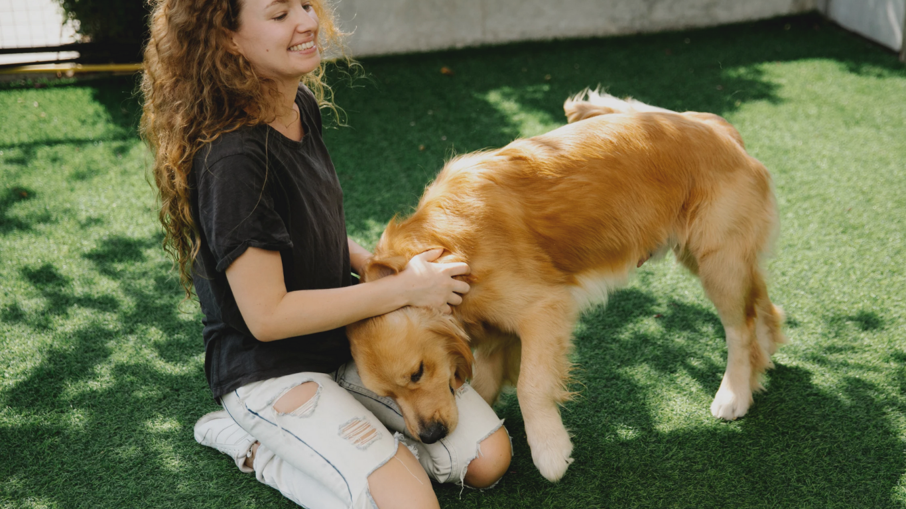
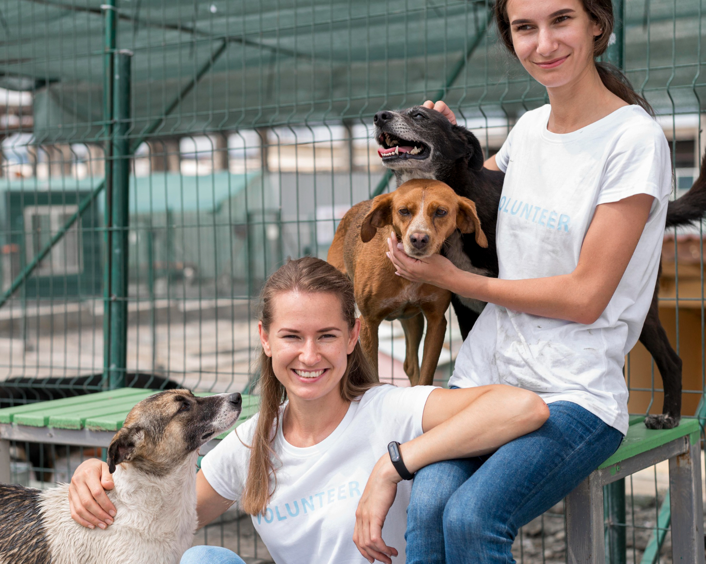
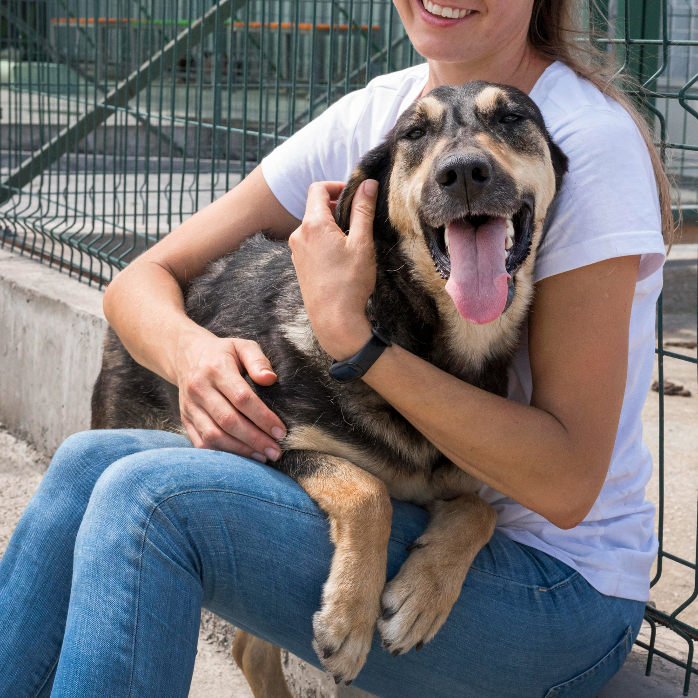
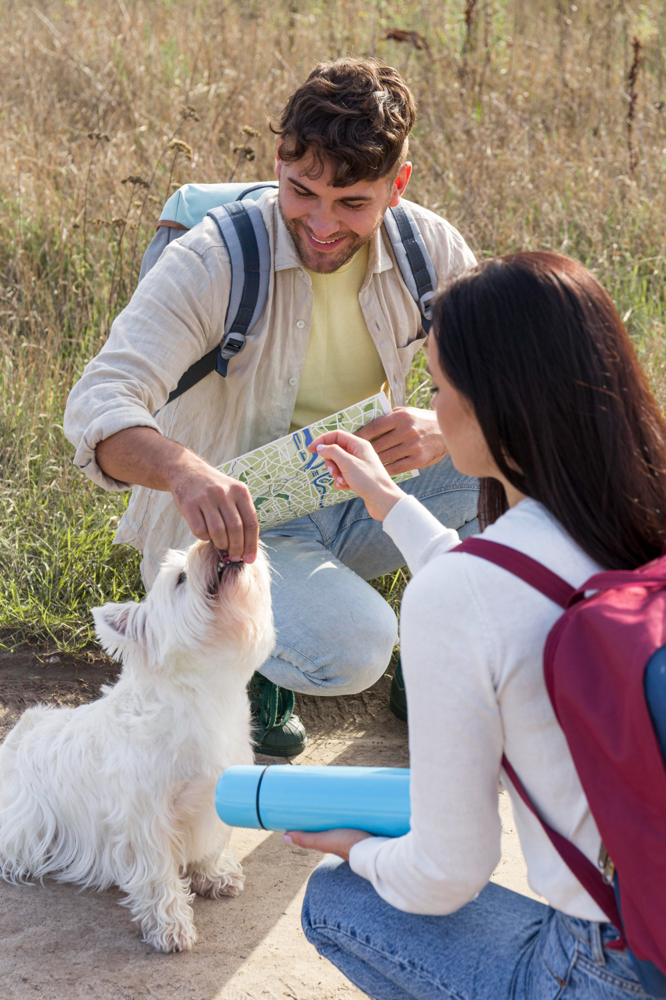
CADA PATITA RECIBE EL AMOR QUE MERECE.
UN REFUGIO DE AMOR
En Patitas Felices rescatamos patitas, recargamos
corazones y creamos nuevas historias de amor.
Cuidamos, curamos y encontramos hogares donde cada cola
vuelva a moverse. ¡Aquí las segundas oportunidades
vienen con ladridos y ronroneos incluidos!
Testimonio de voluntario
Ser voluntario aquí me cambió la vida. Ver animales renacer y sentir cómo un pequeño
gesto puede devolverles esperanza es indescriptible. No solo los rescatamos a ellos…
ellos también nos rescatan a nosotros.
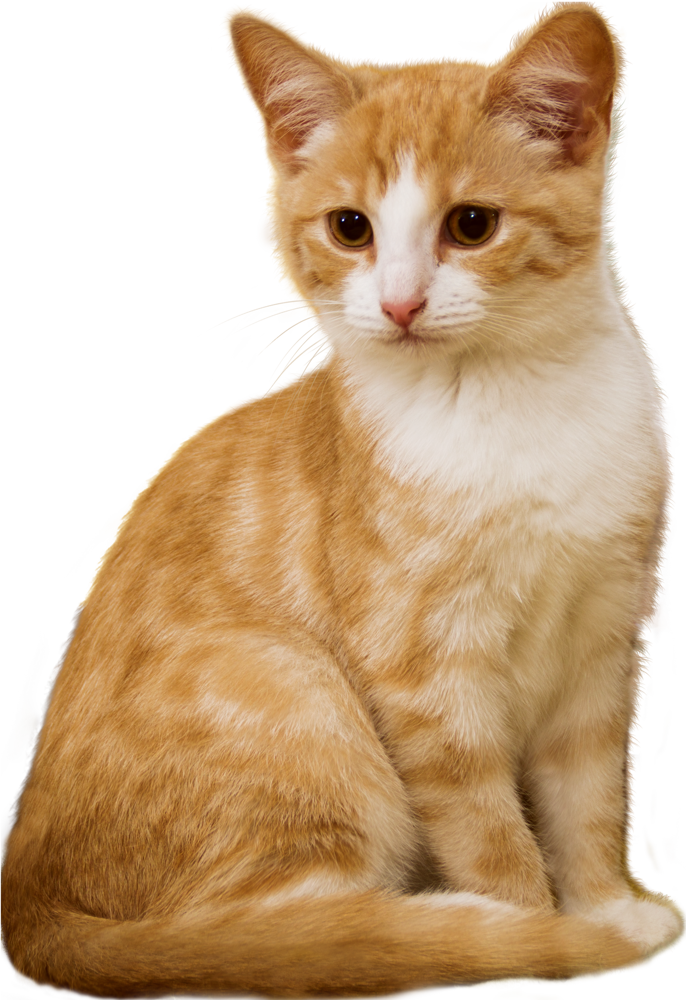
MISIÓN
Trabajamos para rescatar, cuidar y reubicar animales en situación vulnerable, ofreciéndoles atención médica, cuidado responsable y un espacio donde puedan recuperar la confianza.
Promovemos la empatía, el respeto y la adopción consciente, creando conexiones significativas entre cada patita rescatada y una familia que le brinde un hogar lleno de amor.
VISIÓN
Ser una fundación líder en protección y bienestar animal, reconocida por transformar historias difíciles en nuevas oportunidades.
Buscamos construir una comunidad más consciente, solidaria y activa, donde cada peludito reciba el trato digno que merece y así más vidas puedan convertirse en verdaderas patitas felices.
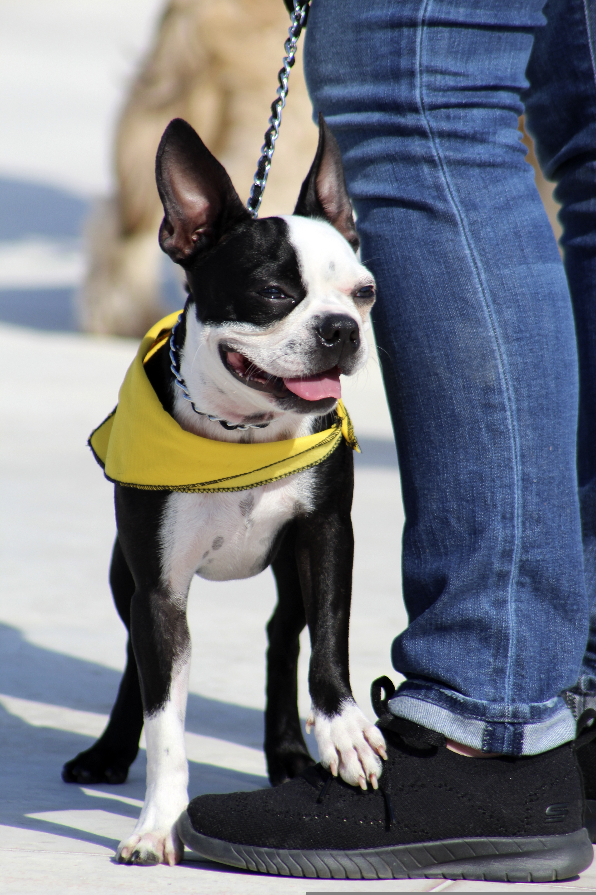
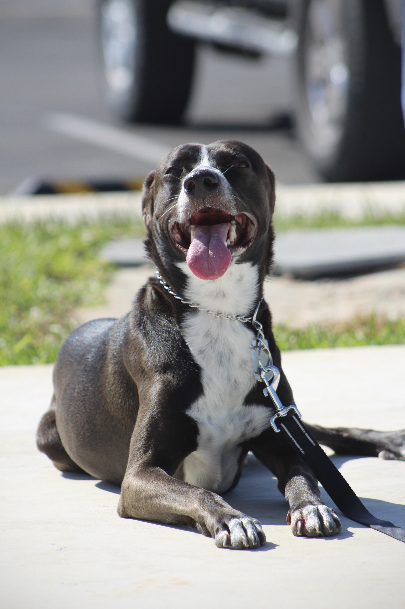
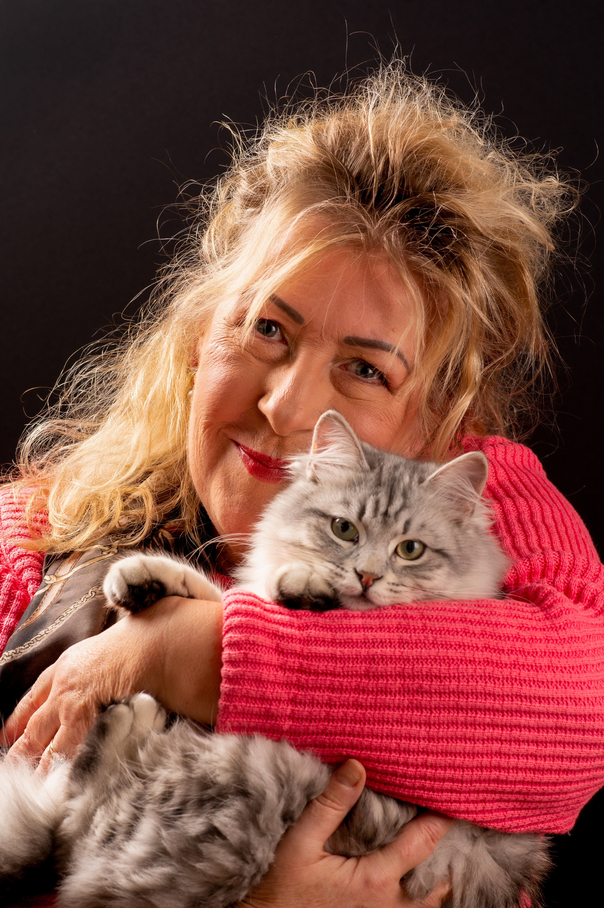
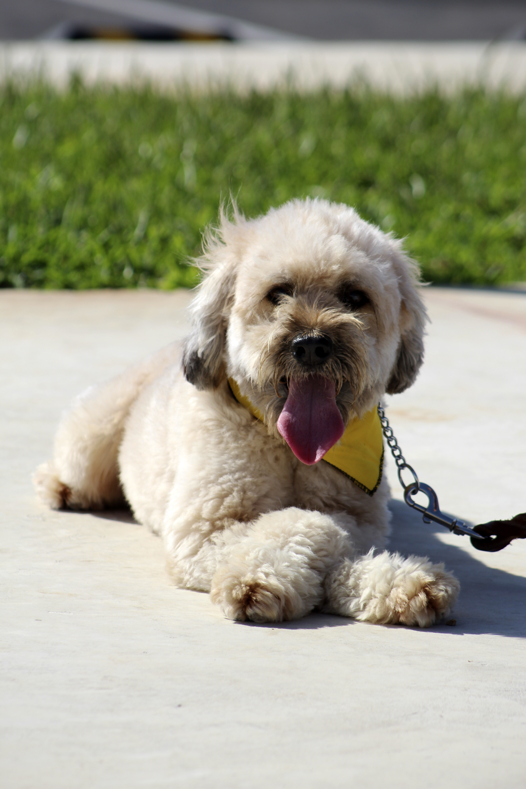